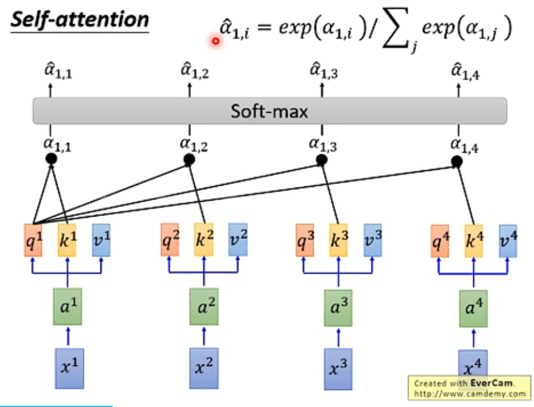
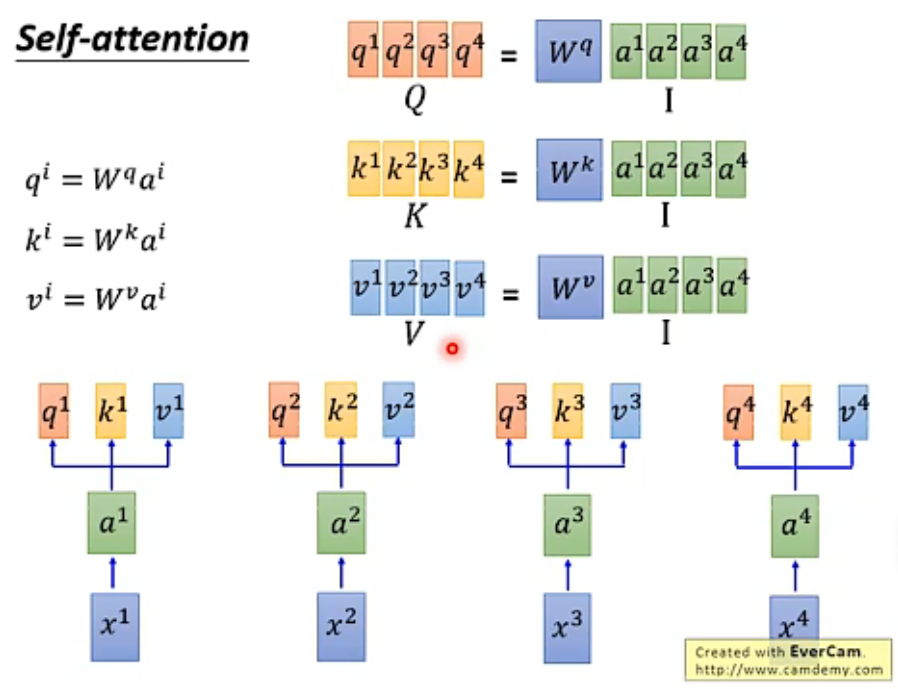
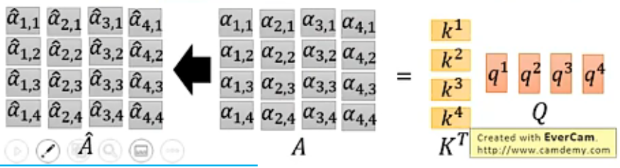
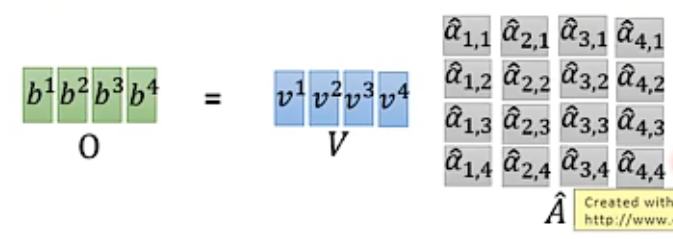
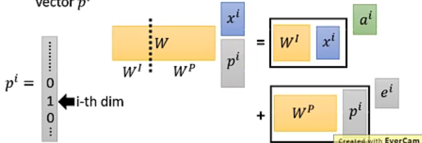
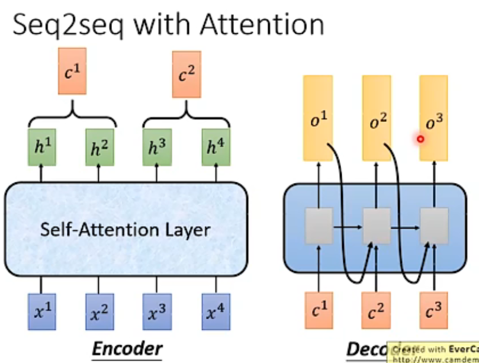

Motivation
seq2seq layer
RNN：缺点是不容易进行并行化
CNN：多层CNN，高层的filter可以考虑更长的依赖，可以并行化；但需要多层
Self-Attention：可并行化，取代RNN
Self-Attention
工作流程
query: $q^i=W^q \cdot x^i$
key
value
拿每个query对每个key做attention（计算匹配性分数，在后面详细介绍）.
Scaled Dot-Product Attention: $\alpha_{i,j}=q^i \cdot k^j / \sqrt{d}$, $d$是query和key的维度.
Softmax：对$\alpha_{i,j}$进行归一化，得到$\hat{\alpha}_{i,j}$.
$\hat{\alpha}_{i,j}$作为$v_j$的权重，加权得到$b^i=\sum_j \hat{\alpha}_{i,j} v^j$.这一步体现输出序列考虑了整个输入序列.

如何做并行化？
query, key, value有各自的权重W.

矩阵运算.


Multi-head Self-attention
有多个权重，得到多个query, key, value.
$q^{i,j}=W^{qj} \cdot x^i$
Positional Encoding
self-attention没有考虑输入序列中的位置信息.对每个位置，增加一个和输入数据无关的位置向量$e^i$. 或者说每个$x^i$增加一个one-hot向量$p^i$.

Seq2seq with Attention
不仅对中间的embedding做attention，还有之前已经输出的部分。

Transformer
layer normalization：对1个数据中每个维度进行归一化，$\mu = 0, \sigma = 1$
Universal Transformer
本来transformer每一层都不一样，现在在深度上做RNN，同一个深度的transformer被反复使用.